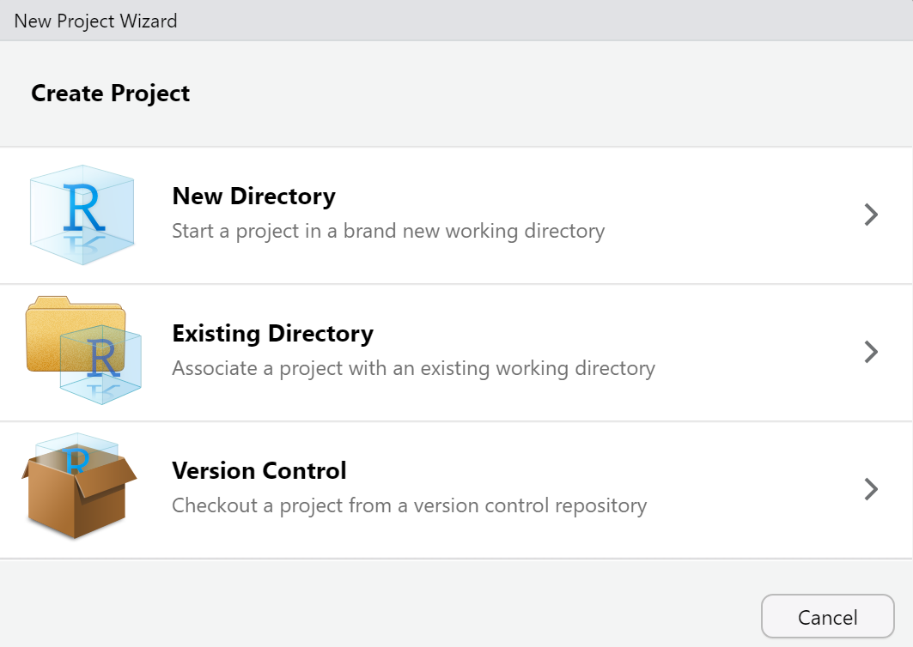
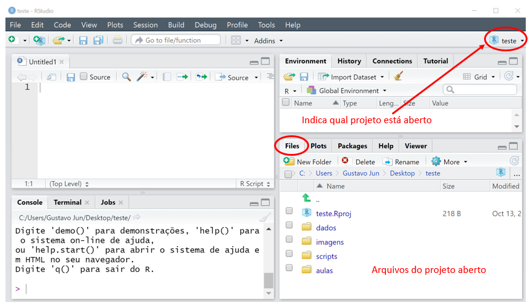
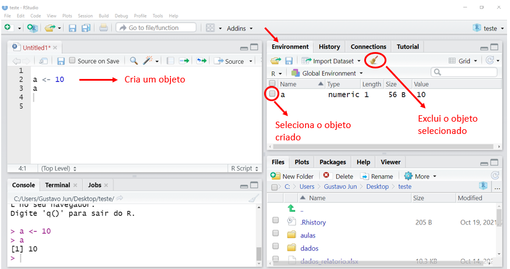

Capítulo3 Noções básicas em R
Aviso: Para ler a versão mais recente deste material, acesse: https://gustavojy.github.io/apostila-icdr/
Para trabalhar com ciência de dados em R, devemos ter algumas noções básicas de programação nessa linguagem. Os conceitos discutidos neste capítulo serão a base para aplicarmos as demais ferramentas ao longo da apostila.
3.1 Projetos
Uma funcionalidade importante do RStudio são os projetos. Ao criar um projeto, uma nova pasta é criada em seu computador. Nela, podemos (e devemos) direcionar os arquivos a serem utiilizados para o projeto, além de abrigar os novos arquivos criados para a análise.
Com isso, a criação de projetos nos proporciona uma melhor organização dos arquivos, separando-os de acordo com o projeto realizado no R. Além disso, facilita a importação de dados para dentro do R, como veremos no capítulo 4, referente à importação de dados.
Para criar um projeto, clique em File, presente no menu superior, depois em New Project.... Então, abrirá uma janela como o da imagem a seguir:

Clique em New Directory, New Project e nomeie seu projeto em Directory name. Em Create project as subdirectory of: escolha o diretório em seu computador (pasta) no qual seu novo projeto será alocado. Finalize clicando em Create Project.
Pronto, seu projeto está criado. No canto superior direito aparecerá o nome do projeto. Além disso, na aba Files, estarão todos os arquivos contidos na pasta referente ao projeto. Portanto, direcione todos os arquivos que você utilizará para a respectiva pasta do projeto em uso.

Clicando no mesmo ícone o qual aparece o nome do projeto, podemos criar um novo projeto e abrir um projeto já existente. Por tanto, atente-se a qual projeto se encontra ativo.
3.2 Ajuda
Cada ferramenta presente no R contém uma documentação que explica a sua utilização. Para acessarmos tais documentos, podemos prosseguir das seguintes maneiras:
Neste exemplo, queremos saber mais sobre a função mean, ou seja, função que calcula a média aritmética. Ao rodar um destes comandos, a documentação referente à função será aberta na aba Help. Nela conterá algumas descrições importantes, como a noção geral de uso da função, os argumentos aceitos e exemplos de utilização.
Portanto, caso tenha dúvidas sobre qualquer outra ferramenta - seja funções, data frames, listas ou pacotes -, utilize o help(nome_da_ferramenta) ou o ?nome_da_ferramenta. Ainda, pode-se utilizar o atalho F1 do teclado, selecionando uma ferramenta presente no script e clicar em F1.
Outra via de auxílio são as folhas de cola, ou Cheatsheets. Basicamente, trazem resumos sobre as principais funções contidas em determinados pacotes. Seu acesso pode ser realizado em: https://www.rstudio.com/resources/cheatsheets/ ou clicando na página inicial da aba Help.
Figure 3.1: Cheetsheet do RStudio. Nela podemos verificar, de maneira geral, as principais funcionalidades presentes no ambiente do RStudio.
Caso ainda tenha dúvidas, não exite em fazer uma busca no Google, encontrar tutoriais explicativos - seja no YouTube ou no próprio site do RStudio -, acessar fóruns de perguntas e respostas - como o Stack Overflow e acessar o Rseek ou o Search R-project, que são buscadores específicos para assuntos relacionados ao R.
3.3 Comentários
Podemos inserir comentários dentro do script, sem que estes interfiram na execução dos códigos. Fazer comentários ao longo do script é muito importante para quem está começando, pois assim permite fazer registros para, posteriormente, revisar a utilizadade de certas funcionalidades ou realizar alguma manutenção no código. Além disso é muito relevante para que se possa compartilhar um código inteligível com outras pessoas.
Para inserir um comentário, basta colocar o símbolo # antes da parte comentada.
Figure 3.2: Perceba que os comentários apresentam uma coloração diferenciada e padronizada no script.
Como visto na figura 3.2, além da possibilidade de comentar no início de uma linha, também podemos realizar comentários após um comando, desde que não interfira no fluxo dos códigos.
3.4 Operações matemáticas
A seguir, listaremos as principais operações matemáticas presentes no R. Digite os seguintes comandos no script e rode-os. Perceba que os resultados aparecem no console.
[1] 2.2[1] 1[1] 25[1] 1.5[1] 8[1] 8[1] 2[1] 1[1] 2[1] 10No caso do exemplo da ordem de precedência, assim como na matemática, o R calcula primeiro a multiplicação e divisão, além dos valores entre parênteses, para, posteriormente, calcular a adição e a subtração.
Outra informação relevante a ser dita quando tratamos de números no R é que os decimais são delimitados por pontos e não por vírgulas, portanto, diferente do padrão adotado no Brasil. Essa informação é importante para que possamos escrever números decimais da maneira a qual o R aceita.
Uma função útil para tratar de números decimais é a round(). Ela arredonda números decimais de acordo com o número de casas decimais informadas no argumento digits.
[1] 10.457[1] 3.143.5 Objetos
Objetos são nomes que recebem um determinado valor. Para criar um objeto, utilizamos o operador <-, cujo atalho no teclado é Alt + - (tecla Alt, junto com o sinal de menos).
No exemplo a seguir, salvaremos o valor 10 dentro do nome a. Ao rodar o objeto a, o R retorna o valor 10.
[1] 10Perceba que ao criar um objeto, esse será armazenado na janela Enviroment. Para excluir objetos, selecione os que deseja excluir e clique no ícone da vassoura.

Devemos nos atentar a alguns outros detalhes ao criarmos um objeto. Primeiramente, o R diferencia letras maiúsculas e minúsculas:
[1] 10[1] 50Além disso, não podemos nomear um objeto começando por números, underline (_), ponto (.) e traço (-), sendo esses, nomes de sintaxe inválida.
Contudo, podemos utilizar números, underline e pontos, desde que não estejam no início do nome.
Neste primeiro momento, criamos objetos que recebem um único valor. Ao longo da apostila, criaremos objetos mais complexos, cada qual apresentando tipos diferentes, como os vetores, data frames e listas.
3.6 Funções
As funções são nomes que guardam um código em R. Portanto, cada função apresenta certas ferramentas específicas que nos trazem alguma resposta.
Dentro dos parênteses de uma função estão os argumentos. Estes argumentos são separados por vírgulas e não há um limite de argumentos que uma função pode receber. Por tanto, uma função executa determinado comando, em resposta aos argumentos especificados dentro dela.
[1] 13No exemplo, 1, 2 e 10 são argumentos da função sum (ou seja, função soma). Portanto, a função realizou a operação de soma dos argumentos especificados dentro da função, retornando o resultado da operação, igual a 13.
Alguns argumentos de funções possuem nomes, que podemos ou não explicitar em uma função. Utilizaremos como exemplo a função seq().
[1] 2 4 6 8 10A função seq() cria uma sequência numérica de acordo com os argumentos. O from indica por qual número se inicia a sequência, o to, em qual número termina e o by, de quanto em quanto a sequência será construída. Assim, no exemplo, criamos uma sequência que começa do 2, termina no 10 e que vai de 2 em 2.
Temos a possibilidade de não explicitar os nomes dos argumentos, desde que se respeite a ordem em que os argumentos aparecem.
[1] 2 4 6 8 10Para saber qual a ordem dos argumentos da função seq(), acessamos a sua documentação com o comando ?seq.
Caso seja explicitado o nome dos argumentos, a ordem não interfere no resultado final.
[1] 2 4 6 8 10Mas caso os nomes não sejam explicitados, a ordem incorreta acarreta em outro resultado.
[1] 2Além de conferir as documentações referentes às funções, podemos utilizar a função args(nome_da_função) para verificar todos os argumentos presentes em uma função específica.
function (formula, data, subset, weights, na.action, method = "qr",
model = TRUE, x = FALSE, y = FALSE, qr = TRUE, singular.ok = TRUE,
contrasts = NULL, offset, ...)
NULLAs funções serão a base para realizarmos cada etapa do fluxograma da ciência de dados, assim, nos depararemos com diversas funções e argumentos específicos, cada qual presente em um pacote ou sendo nativo do R.
3.7 Classes
As classes de objetos nos indicam qual o tipo de valor que está armazenado em um determinado objeto. São divididas em quatro principais tipos:
numeric: apresenta valores numéricos, sejam inteiros (integer) ou decimais (double);
character: valores do tipo caractere. Também podemos chamá-los de valores do tipo texto, categóricos ou string, nome mais comum no meio da programação;
factor: apresentam variáveis qualitativas possíveis de serem agrupadas em categorias. Veremos com mais detalhes na seção 3.10;
logical: valores lógicos do tipo verdadeiro ou falso (TRUE/FALSE). Também são conhecidos como valores booleanos. Abordaremos mais detalhadamente esta classe na seção 3.11.
Para verificarmos a classe de um objeto, utilizamos a função class(), tendo como argumento o nome do objeto. Vejamos alguns exemplos:
[1] "numeric"[1] "character"Para criarmos um objeto com a classe do tipo caractere, devemos escrevê-lo entre aspas "". As aspas servem para diferenciar nomes (objetos, funções e pacotes) de textos (letras e palavras). No exemplo anterior, perceba que na classe numérica criamos um objeto de nome a que recebe o valor 10, enquanto que na classe caractere, criamos um objeto de nome b que recebe o texto "a".
Portanto, resumindo: no primeiro caso, criamos um objeto chamado a, enquanto no outro exemplo, criamos um objeto que contém o caractere "a".
Conhecer a classe de objetos e valores é importante para definirmos os procedimentos e operações possíveis de serem realizadas. Por exemplo, podemos realizar uma operação matemática com números, porém não podemos com caracteres.
[1] 100Error in "a" + "b": argumento não-numérico para operador binárioError in "1" + "1": argumento não-numérico para operador binárioNo último exemplo, perceba que os números 1 foram escritos entre aspas, logo deixam de ser um tipo numérico para se apresentar como um tipo caractere. Por este motivo não conseguimos realizar a soma desses.
3.8 Data frames
O data frame é o objeto que armazena os dados importados para dentro do R. São estruturados a partir de linhas e colunas, sendo que cada coluna representa uma variável e cada linha, uma observação, estrutura muito semelhante a uma planilha Excel.
weight group
1 4.17 ctrl
2 5.58 ctrl
3 5.18 ctrl
4 6.11 ctrl
5 4.50 ctrl
6 4.61 ctrl
7 5.17 ctrl
8 4.53 ctrl
9 5.33 ctrl
10 5.14 ctrl
11 4.81 trt1
12 4.17 trt1
13 4.41 trt1
14 3.59 trt1
15 5.87 trt1
16 3.83 trt1
17 6.03 trt1
18 4.89 trt1
19 4.32 trt1
20 4.69 trt1
21 6.31 trt2
22 5.12 trt2
23 5.54 trt2
24 5.50 trt2
25 5.37 trt2
26 5.29 trt2
27 4.92 trt2
28 6.15 trt2
29 5.80 trt2
30 5.26 trt2O data frame PlantGrowth é nativo do R e contém dados sobre o crescimento de plantas sob 2 tipos diferentes de tratamentos (para mais informações, consulte a documentação do data frame, rodando ?PlantGrowth). Possui 30 linhas (observações) e 2 colunas (variáveis).
Portanto, podemos dizer que o objeto de nome PlantGrowth guarda um data frame com 30 linhas e 2 colunas.
Podemos aplicar algumas funções em data frames, a fim de visualizarmos melhor sua estrutura e elementos presentes. A seguir, demonstraremos algumas delas aplicadas no data frame PlantGrowth.
weight group
1 4.17 ctrl
2 5.58 ctrl
3 5.18 ctrl
4 6.11 ctrl
5 4.50 ctrl
6 4.61 ctrl weight group
25 5.37 trt2
26 5.29 trt2
27 4.92 trt2
28 6.15 trt2
29 5.80 trt2
30 5.26 trt2[1] 30 2[1] "weight" "group" 'data.frame': 30 obs. of 2 variables:
$ weight: num 4.17 5.58 5.18 6.11 4.5 4.61 5.17 4.53 5.33 5.14 ...
$ group : Factor w/ 3 levels "ctrl","trt1",..: 1 1 1 1 1 1 1 1 1 1 ... weight group
Min. :3.590 ctrl:10
1st Qu.:4.550 trt1:10
Median :5.155 trt2:10
Mean :5.073
3rd Qu.:5.530
Max. :6.310 Os data frames serão o nosso principal objeto de estudo para aplicarmos ciência de dados, uma vez que guardam os dados a serem analisados. Estudaremos os data frames com mais detalhes na subseção 3.13.1. Mas antes, devemos conhecer alguns outros conceitos importantes, como é o caso dos vetores, assunto do tópico a seguir.
3.9 Vetores
Os vetores nada mais são do que um conjunto de valores unidos em um só objeto. Em um linguajar mais técnicos, vetor é um conjunto de valores indexados. Para criarmos um vetor, devemos utilizar a função c(), cujos argumentos devem estar separados por vírgulas.
[1] 2 6 -10 14 18 22[1] "numeric"[1] "g" "j" "y"[1] "character"Perceba que a função class() nos retorna o tipo de classe que um vetor apresenta. Um vetor só pode guardar um tipo de classe. Caso misturemos um vetor com números e caracteres, os números serão convertidos para texto. Esse comportamento é conhecido como coerção.
[1] "1" "5" "a"[1] "character"Os números 1 e 5, dentro de um vetor que contém o caractere "a", são convertidos para texto, resultando em um vetor com os textos "1", "5" e "a", como constatado ao utilizar a função class(), que nos retorna uma classe do tipo caractere.
Portanto, devemos ter em mente que, para vetores com valores de classes diferentes, os caracteres serão dominantes em relação aos números. Para criar um conjunto de valores com classes diferentes, devemos criar uma lista, assunto que veremos mais adiante na seção 3.13.
Podemos criar um vetor com uma sequência numérica utilizando o operador :.
[1] 1 2 3 4 5 6 7 8 9 10 11 12 13 14 15Ao criarmos um vetor, cada valor ocupa uma posição dentro do vetor. A posição é dada pela ordem em que estão no vetor. Portanto, podemos encontrar determinados valores de acordo com a posição em que estão localizados no vetor. Essa operação é conhecida como subsetting. Para isso, colocamos o número da posição que desejamos acessar dentro de colchetes [], associado ao objeto que desejamos analisar.
[1] 11[1] 22[1] 33[1] 44[1] NAO objeto de nome posicao_vetor é um vetor com 4 valores (ou 4 argumentos). Com o comando posicao_vetor[1], temos o valor 11, contido na primeira posição do vetor, seguindo a mesma lógica para as demais posições. Perceba que o comando posicao_vetor[5] nos retorna o valor NA, pois não existe esta posição dentro do vetor. Mais adiante, na seção 3.12, trataremos sobre o valor NA.
Também podemos inserir um conjunto de posições dentro dos colchetes, o que nos retorna um subconjunto de valores dentro de um vetor. Para isso, utilizamos a função c(), tendo como argumentos as posições que se deseja acessar.
[1] "x" "z"Ainda, podemos realizar operações matemáticas com vetores de classe numérica:
[1] 9 20 25 26[1] 7 18 23 24[1] 4.0 9.5 12.0 12.5[1] 16 38 48 50[1] 64 361 576 625Perceba que as operações matemáticas são executadas para cada um dos elementos do vetor.
Também podemos fazer operações entre vetores:
[1] 6 8 10 12Para realizar a operação, ambos os vetores são alinhados, sendo somados os valores de acordo com a posição correlata entre os elementos dos vetores. Portanto, o elemento que oculpa a primeira posição no vetor1 é somado com o primeiro elemento do vetor2, seguindo a mesma lógica para os demais elementos.
No caso de vetores com tamanhos diferentes, ocorre o processo de reciclagem.
[1] 12 25 34 47A operação entre vetores de tamanhos diferentes segue a mesma lógica citada anteriormente: ambos os vetores são alinhados, porém, por apresentarem diferentes dimensões, é realizada uma repetição (reciclagem) do vetor3 para que esse fique com o mesmo tamanho do vetor4, assim, possibilitando a operação matemática. Portanto, é como se o vetor3 tivesse a dimensão de c(1, 3, 1, 3).
Vale destacar que o comportamento de reciclagem foi aplicado quando fizemos as operações matemáticas em um só vetor. Por exemplo, quando somamos 1 ao vetor de dimensão c(8, 19, 24, 25), o R reciclou o número 1 - que nada mais é do que um vetor de tamanho 1, igual a c(1) - formando um vetor c(1, 1, 1, 1) para que fosse possível realizar a soma.
Até então, fizemos operações entre vetores com comprimentos múltiplos entre si. Ao realizar operações entre vetores cujos tamanhos não são múltiplos, a reciclagem atua da seguinte maneira:
Warning in vetor5 + vetor6: comprimento do objeto maior não é múltiplo do
comprimento do objeto menor[1] 11 22 33 41 52Nessa situação, foi realizada a reciclagem do vetor5, até que ele adquirisse a mesma dimensão do vetor6. Assim, o vetor5 se apresenta da seguinte maneira após a reciclagem: c(1, 2, 3, 1, 2). Perceba que o último valor do vetor5 não foi reciclado na operação, pois sua presença na reciclagem ultrapassaria a dimensão do vetor6. Normalmente, esse tipo de operação não é desejada, devido a não reciclagem de certos valores de um vetor, o que pode causar problemas nas análises. E, justamente, por ser um processo incomum, o R gera uma mensagem de aviso (warning) no console, alertando o ocorrido.
Guarde com carinho os conceitos explicados nesta seção, pois os utilizaremos com muita frequência nos próximos capítulos para trabalharmos com os data frame, uma vez que cada coluna de um data frame é um vetor.
3.10 Fatores
As variáveis do tipo fator são um caso especial de classe de objetos que representam variáveis qualitativas possíveis de serem agrupadas em categorias, como, por exemplo, o sexo e grau de escolaridade. As possíveis categorias presentes em um fator são indicadas pelo atributo levels, como os levels masculino e feminino, no caso do sexo, e ensino fundamental, médio e superior, no caso do grau de escolaridade.
Normalmente, este tipo de variável é criada ou importada como texto, sendo necessário transformá-la em fator, utilizando a função as.factor().
[1] "character"[1] F F M F M M
Levels: F MCriando o objeto sexo, sendo os argumentos F para o sexo feminino e M para o masculino, temos um vetor de classe do tipo caractere. Como o sexo é uma variável possível de ser categorizada, transformamos essa variável para a classe fator, a partir da função as.factor(). Perceba que na classe do tipo fator, o R nos retorna os levels, ou seja, o conjunto de categorias presentes no objeto sexo, no caso, F e M.
Ainda, podemos criar um vetor do tipo fator utilizando a função factor(). A função class() mostra o tipo de classe do objeto sexo_fator e a levels(), indica quais são as categorias presentes no objeto de classe do tipo fator.
[1] "factor"[1] "F" "M"Por padrão, os levels são ordenados por ordem alfabética. No exemplo anterior, a categoria F vem antes da M. Para reordená-las, utilizamos o argumento levels na função factor(), ordenando as categorias de acordo com sua posição no vetor.
[1] "M" "F"3.10.1 Diferenças entre fatores e caracteres
Apesar dos objetos do tipo fator serem representados por letras ou palavras, o R os enxerga como números inteiros, diferentemente dos objetos da classe caractere, que são puramente textos. Podemos notar essas diferenças ao tentar convertê-las em classe numérica.
[1] "character"[1] NA NA NA NA NA NA[1] "factor"[1] 1 1 2 1 2 2Podemos notar que não foi possível converter o vetor do tipo caractere para um vetor numérico, pois o R não consegue atribuir uma classificação numérica para textos. Porém, no caso do vetor tipo fator, foi possível transformá-lo para um tipo numérico, sendo representado como 1 o nível F e como 2, o M.
Portanto, para o R, os levels dos fatores são números inteiros sequenciais, começando do 1, atribuídos conforme a ordem alfabética dos argumentos no vetor.
3.11 Operações lógicas
As operações lógicas nos retornam valores do tipo verdadeiro ou falso, representados no R por TRUE e FALSE (em letras maiúsculas), respectivamente. Portanto, a classe atribuida a estes tipos de valores é a logical - como vimos na seção 3.7 - aceitando somente estes dois valores.
[1] "logical"[1] "logical"Para aplicarmos testes lógicos, podemos utilizar o operador == (duas vezes o sinal de igual) para verificar se dois valores são iguais, ou o operador != (exclamação + igual) para ver se os valores são diferentes.
[1] TRUE[1] TRUE[1] TRUE[1] TRUE[1] FALSE[1] FALSE[1] FALSE[1] FALSEAlém disso, podemos utilizar outros operadores lógicos, como por exemplo:
<se um valor é menor ao outro;>se um valor é maior ao outro;<=se um valor é menor ou igual ao outro;>=se um valor é maior ou igual ao outro.
[1] TRUE[1] FALSE[1] TRUE[1] FALSE[1] TRUE[1] FALSE[1] TRUE[1] FALSEO operador %in% verifica se um dado valor pertence a um vetor, ou seja, se um valor está contido dentro de um conjunto de valores.
[1] TRUE[1] FALSEAinda tratando dos vetores, observe o seguinte exemplo:
[1] FALSE FALSE TRUE FALSE TRUE TRUE FALSE[1] 6 10 52Aqui teremos que relembrar alguns conceitos expostos anteriormente. Primeiramente, criamos um vetor de nome vet, que recebe 7 valores. Posteriormente, utilizamos um teste lógico para verificar quais valores de vet são maiores que 3, cuja resposta é dada por TRUE ou FALSE. Nessa situação, ocorre uma reciclagem (conceito visto na seção 3.9) do valor 3, portanto, resultando em um vetor igual a c(3, 3, 3, 3, 3, 3, 3). A partir disso, o R alinha o vetor c(1, 0, 6, -9, 10, 52, 3) com o vetor c(3, 3, 3, 3, 3, 3, 3) e testa a lógica proposta elemento por elemento (1 > 3, 0 > 3, 6 > 3, -9 > 3, 10 > 3, 52 > 3 e 3 > 3), formando um vetor de verdadeiros e falsos.
Toda essa explicação embasa a operação lógica vet[vet > 3], que nos retorna apenas os valores do vetor que são maiores que 3, ou seja, todos os valores iguais a TRUE. Esse tipo de operação será muito utilizada nos capítulos seguintes, mais especificamente no capítulo 6 ao utilizarmos a função filter, essa muito mais simples de operar do que em relação ao apresentado anteriormente, porém seguindo a mesma lógica.
3.12 Valores especiais
Nesta seção, explicaremos alguns valores particulares presentes no R.
3.12.1 NA
O NA representa a ausência de informação, ou seja, a informação existe, porém não se sabe qual é. Em bases de dados, é comum que algumas informações não tenham registro, sendo assim, representados pelo valor NA. Com isso, devemos saber interpretar e tratar estes valores.
Reforçando o significado de NA, podemos exemplificar com uma coleta de dados em que certos indivíduos não informaram suas idades. Isso não significa que os entrevistados não possuem idade, mas simplesmente que o registro de algumas idades é uma informação ausente na pesquisa.
Sabendo do significado de NA, podemos aprofundar sua utilização em testes lógicos, como representa o exemplo a seguir:
[1] NA[1] NAConhecemos apenas a idade do José, mas não sabemos a idade do João e da Maria, logo, a idade dos dois últimos são representados pelo valor NA. Ao aplicar o teste lógico idade_jose == idade_joao, o retorno é o valor NA, ou seja, o R não sabe responder se a idade do José é a mesma de João, uma vez que a idade do João não foi informada. No teste idade_joao == idade_maria, também nos é retornado o valor NA, pois ambas as idades não foram informadas, logo tanto a idade do João pode ser a mesma da Maria, como pode ser distinta. Portanto, o R não “chutará” uma resposta e simplesmente responderá: NA (não sei).
Dito isso, temos que nos atentar aos valores NA presentes nos nossos data frames, pois em algumas operações, como a média (mean()), não conseguimos executá-la na presença desses valores. No caso da função mean(), ela possui o argumento na.rm = TRUE para excluir os NA da operação matemática. Todavia, algumas outras funções não possuem um argumento semelhante, sendo necessário realizar outras manipulações de dados, as quais veremos nos capítulos mais adiantes.
3.12.2 NaN
O NaN (not a number) representa indeterminações matemáticas.
[1] NaN[1] NaNTambém podemos utilizar testes lógicos com a função is.nan().
[1] TRUE3.12.3 Inf
O Inf (infinito) representa um valor muito grande, o qual o R não consegue retratar. Também pode representar um limite matemático.
[1] Inf[1] Inf[1] -InfNovamente, podemos utilizar testes lógicos para identificar se um objeto apresenta valor infinito. Para isso, utilizamos a função is.infinite().
[1] TRUE3.12.4 NULL
O NULL representa a ausência de um objeto. Seu significado está mais atrelado a lógica de programação, quando não queremos atribuir valor à um objeto. Portanto, diferentemente do NA, o NULL indica a inexistência de um parâmetro qualquer.
NULLPara utilizar teste lógico à valores nulos, utilizamos a função is.null().
[1] TRUE3.13 Listas
As listas são objetos semelhantes a um vetor, porém, com algumas diferenças. Como citado na seção 3.9, não podemos misturar objetos de classes distintas em um único vetor, contudo, nas listas podemos realizar essa mescla de classes.
Para criarmos uma lista, utilizamos a função list(), tendo como argumentos os valores desejados.
[[1]]
[1] 5
[[2]]
[1] "x"
[[3]]
[1] FALSE[1] "list"Nesse caso, criamos uma lista com elementos de classes numérica, caractere e lógica, sem que ocorresse coerção, ou seja, não houve a conversão do objeto para uma única classe, como vimos ocorrer com os vetores (seção 3.9). Assim, as listas nos permite unir classes distintas em um mesmo objeto.
Outro diferencial é o fato de que cada elemento de uma lista também é uma lista. Portanto, para acessarmos um elemento de uma lista, devemos utilizar dois colchetes [[]].
[[1]]
[1] "x"[1] "list"[1] "x"[1] "character"Assim, utilizando um colchete, é retornado a classe da lista que contém um único elemento. Já com dois colchetes, nos é retornado a classe do elemento que está na lista, no caso do exemplo, a classe do x.
O fato de cada elemento ser uma lista dentro de uma lista é importante para podermos colocar vetores de tamanhos diferentes em cada posição. Isso faz das listas objetos muito flexíveis para armazenar dados.
listas_sao_flexiveis <- list(1:5, c("a", "b", "c"), c(TRUE, FALSE, TRUE, FALSE))
listas_sao_flexiveis[1][[1]]
[1] 1 2 3 4 5[[1]]
[1] "a" "b" "c"[[1]]
[1] TRUE FALSE TRUE FALSEPodemos nomear cada posição de uma lista. Para isso, colocamos dentro da função list() os argumentos com as respectivas denominações e valores.
dados_estudantes <- list(nome = c("José", "Joao", "Maria"),
sexo = c("M", "M", "F"),
idade = c(26, 19, 20))
dados_estudantes$nome
[1] "José" "Joao" "Maria"
$sexo
[1] "M" "M" "F"
$idade
[1] 26 19 20Quando a posição de uma lista possui um nome, podemos acessar seus valores com o operador $. Esse operador é equivalente a dados_alunos[[]].
[1] "José" "Joao" "Maria"[1] "M" "M" "F"[1] 26 19 203.13.1 Data frames e listas
Depois de apresentarmos o que são listas (além dos demais conceitos presentes nas seções anteriores), vamos aprofundar os nossos conhecimentos sobre os data frames.
A relação entre listas e data frames é que, basicamente, os data frames são um tipo de lista. Assim, as propriedades expostas sobre as listas se aplicam aos data frames.
No capítulo 3.8, apresentamos o básico sobre os data frames, exemplificado com o PlantGrowth. Assim, para entendermos a equivalência entre listas e data frames, converteremos o PlantGrowth em uma lista.
weight group
1 4.17 ctrl
2 5.58 ctrl
3 5.18 ctrl
4 6.11 ctrl
5 4.50 ctrl
6 4.61 ctrl$weight
[1] 4.17 5.58 5.18 6.11 4.50 4.61 5.17 4.53 5.33 5.14 4.81 4.17 4.41 3.59 5.87
[16] 3.83 6.03 4.89 4.32 4.69 6.31 5.12 5.54 5.50 5.37 5.29 4.92 6.15 5.80 5.26
$group
[1] ctrl ctrl ctrl ctrl ctrl ctrl ctrl ctrl ctrl ctrl trt1 trt1 trt1 trt1 trt1
[16] trt1 trt1 trt1 trt1 trt1 trt2 trt2 trt2 trt2 trt2 trt2 trt2 trt2 trt2 trt2
Levels: ctrl trt1 trt2Perceba que os nomes das colunas do data frame se tornam o nome das posições de uma lista ($weight e $group) e cada valor das colunas são convertidos em elementos da respectiva lista.
Portanto, podemos dizer que cada coluna de um data frame também é um data frame, assim como no caso das listas.
[1] "data.frame"[1] "data.frame"Além disso, podemos utilizar o operador $ para acessar os elementos de uma coluna (ou lista).
[1] 4.17 5.58 5.18 6.11 4.50 4.61 5.17 4.53 5.33 5.14 4.81 4.17 4.41 3.59 5.87
[16] 3.83 6.03 4.89 4.32 4.69 6.31 5.12 5.54 5.50 5.37 5.29 4.92 6.15 5.80 5.26 [1] ctrl ctrl ctrl ctrl ctrl ctrl ctrl ctrl ctrl ctrl trt1 trt1 trt1 trt1 trt1
[16] trt1 trt1 trt1 trt1 trt1 trt2 trt2 trt2 trt2 trt2 trt2 trt2 trt2 trt2 trt2
Levels: ctrl trt1 trt2Contudo, temos de destacar que todo data frame é um tipo de lista, porém nem toda lista é um data frame. Assim, o data frame possui algumas propriedades particulares que o torna um tipo de lista especial:
Todas as colunas precisam ter a mesma dimensão, ou seja, ter o mesmo número de linhas;
Todas as colunas precisam ser nomeadas;
Possuir 2 dimensões.
Essas propriedades nos indicam que um data frame tem que receber uma base de dados em formato retangular (análoga a uma planilha Excel), com o mesmo número de linhas (observações) em cada coluna (variável), sendo necessário a presença um nome específico para cada uma das colunas.
Um exemplo da propriedade Todas as colunas precisam ter a mesma dimensão é a tentativa (falha) de converter uma lista com vetores de comprimentos diferentes em um data frame.
Error in (function (..., row.names = NULL, check.rows = FALSE, check.names = TRUE, : arguments imply differing number of rows: 5, 3, 4A propriedade Todas as colunas precisam ser nomeadas não é um impeditivo para se criar um data frame, porém, não se obtém um bom resultado ao ignorar esta propriedade, pois é necessário ter um nome para cada coluna e o R trata de criá-los de uma maneira pouco agradável.
dados_estudantes <- list(c("José", "Joao", "Maria"),
c("M", "M", "F"),
c(45, 19, 26))
as.data.frame(dados_estudantes) c..José....Joao....Maria.. c..M....M....F.. c.45..19..26.
1 José M 45
2 Joao M 19
3 Maria F 26Já a propriedade Possuir 2 dimensões indica que o data frame possui linhas e colunas, o que os diferencia das listas, uma vez que essas não possuem dimensão. A função dim() retorna as dimensões de um objeto e comprova que as listas não possuem dimensão.
[1] 30 2NULLAssim, a função dim() nos indica que o data frame PlantGrowth apresenta 30 linhas e 2 colunas. Por outro lado, ao convertermos o data frame PlantGrowth em uma lista, a mesma função nos diz que o objeto é ausente de dimensão (NULL).
Além disso, caso haja valores faltantes na base de dados (como, por exemplo, células vazias no Excel), esses serão representados por NA, sendo preservada a estrutura do data frame.
Por possuir duas dimensões, para acessarmos valores em um data frame, devemos especificar as linhas e colunas dentro de colchetes, na seguinte ordem: [numero_linha, numero_coluna].
[1] 5.14Podemos pegar todas as linhas de uma coluna ou todas as colunas de uma linha deixando um dos argumentos vazios:
[1] ctrl ctrl ctrl ctrl ctrl ctrl ctrl ctrl ctrl ctrl trt1 trt1 trt1 trt1 trt1
[16] trt1 trt1 trt1 trt1 trt1 trt2 trt2 trt2 trt2 trt2 trt2 trt2 trt2 trt2 trt2
Levels: ctrl trt1 trt2 weight group
2 5.58 ctrlE, devido ao fato de que cada coluna do data frame é um vetor, podemos aplicar testes lógicos para filtrar linhas, assim como fizemos na seção 3.11.
weight group
2 5.58 ctrl
4 6.11 ctrl
15 5.87 trt1
17 6.03 trt1
21 6.31 trt2
23 5.54 trt2
28 6.15 trt2
29 5.80 trt2Neste caso, a condição lógica imposta à coluna weight nos retorna todas as linhas que apresentem plantas com peso seco maior que 5,5.
Com as listas, finalizamos as noções básicas em R. Para aqueles que entraram em contato pela primeira vez com conceitos teóricos de programação, seja na linguagem que for, a teoria pode parecer complicada e maçante. Mas a não compreensão de alguns conceitos expostos neste capítulo não será um impeditivo para continuar os estudos em ciência de dados em R. Sinta-se livre em replicar os códigos dos próximos capítulos, mesmo que não compreenda 100% do que está sendo feito. Em algumas ocasiões, você compreenderá melhor um conceito ao aplicá-lo na prática. Além disso, recomendo que você revisite este capítulo caso tenha alguma dúvida conceitual, ou senão, quando estiver mais familiarizado na programação em R.
Portanto, nos próximos capítulos, começaremos a aplicar ciência de dados na prática, começando pela importação de dados ao R.